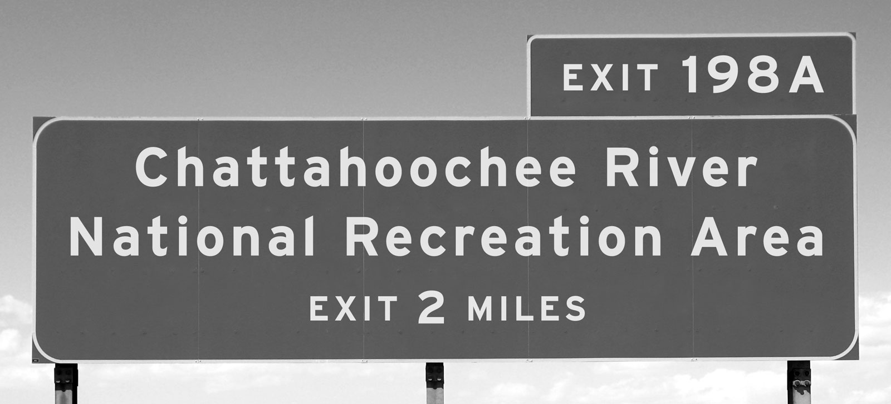
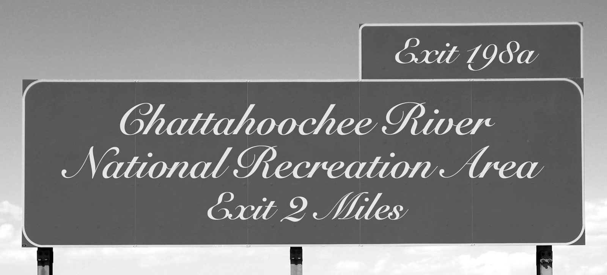

Good typography reinforces the meaning of the text.
Almost all texts communicate a set of points (The petition should be denied for three reasons). Sometimes a text also needs to instruct the reader (Add lines 7 through 21 and enter the total here). Other texts offer warnings or admonitions (You must be 48 inches tall to ride; Speed limit 75). In every case, good typography supports and reinforces the message. Good typography makes the text more effective.
Three subsidiary propositions flow from this:
Good typography is measured by how well it reinforces the meaning of the text, not by some abstract scale of merit. Typographic choices that work for one text won’t necessarily work for another. (Corollary: good typographers don’t rely on rote solutions. One size never fits all.)
For a given text, there are many typographic solutions that would be equally good. Typography is not a math problem with one correct answer.
Your ability to produce good typography depends on how well you understand the goals of your text, not on taste or visual training. (Corollary: if you misunderstand the meaning of your text, good typography becomes purely a matter of luck.)
Pause to absorb the ramifications of proposition #3. Typography is visual, so it’s easy to conclude that it’s primarily an artistic or aesthetic pursuit. Not so. Typography is primarily utilitarian.
Therefore, good typography is measured on a utilitarian yardstick. Typography that is aesthetically pleasant, but that doesn’t reinforce the meaning of the text, is a failure. Typography that reinforces the meaning of the text, even if aesthetically unpleasant, is a success.
Does that mean that effective typography can be ugly? Sure. Sometimes ugly is better than pretty.
Look at the highway signs again.


The script font may be prettier, but in this context, it’s bad typography, because it’s not suited to the task. Conversely, the highway-signage font would look terrible on a wedding invitation, where the script font would be appropriate.
A related example:

Here, the same font is used in all three versions of this sign. But the first two signs fail to deliver the message—the speed limit is 75—because the typography undermines the text. The most important element is the number 75. Also important is the caption speed limit. Only the third version gets the balance right. It’s the only example of good typography among the three.
Use this principle to test the quality of your own typographic work. The advantage of applying a utilitarian benchmark instead of an aesthetic one is that it doesn’t require aesthetic judgment. Believe me, if you’re just starting out in typography, you will produce some ugly work. Don’t worry. If it’s ugly and effective, you’re making progress.
A popular but flawed line of reasoning holds that the best typography is “ invisible.” This idea dates back at least to Beatrice Warde’s 1932 essay“ The Crystal Goblet,”“ Can’t legibility be resolved by research?” Research can help if the design context is specific enough to permit testable propositions. For instance, the new federal-highway font, Clearview, was informed by